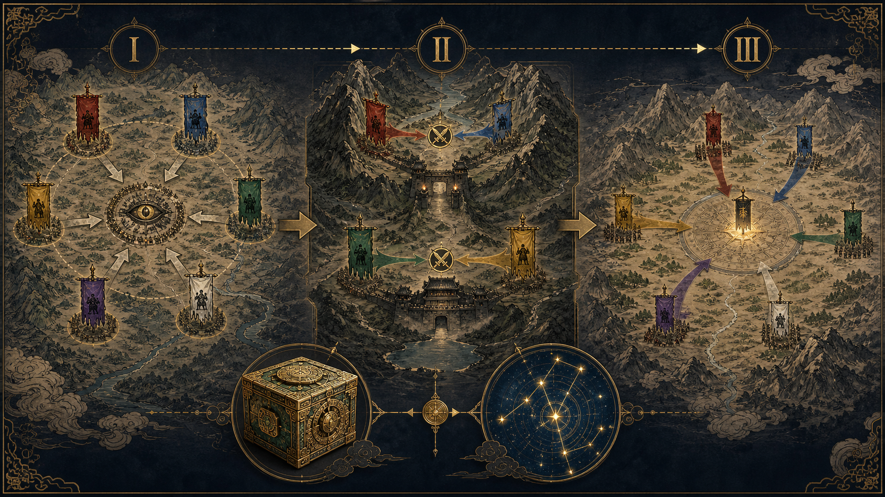
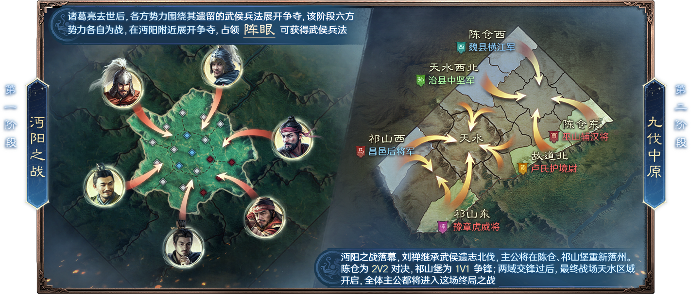

I
沔阳之战
关系：六方势力各自为战。
目标：争夺沔阳附近的「阵眼」。
收益：占领阵眼可获得武侯兵法。它把前期目标从“单纯扩张”改成“围绕稀缺战场节点的竞争”。
以诸葛亮遗留的兵法、天机与星命为叙事锚点：先在沔阳六方混战抢资源，再转入分区阵营战，最终所有势力汇入天水决战。
资料截点：2026-08-04 · 面向策划参考赛季不从单一出生州一路推到底，而是先用多方争夺制造变局，再切换到更清晰的阵营对抗与终局汇战。
① 前期是否为阵眼投入同盟战力，换取武侯兵法；② 二阶段在陈仓或祁山堡的阵线分工与协同；③ 每日如何配置有限槽位的天机盒机关，并按霸业进度选择星命图羁绊。
“六方”“阵眼”“陈仓 2v2 / 祁山堡 1v1 / 天水终局”“天机盒”“星命图”均来自官方版本说明。
关系：六方势力各自为战。
目标：争夺沔阳附近的「阵眼」。
收益：占领阵眼可获得武侯兵法。它把前期目标从“单纯扩张”改成“围绕稀缺战场节点的竞争”。
重落州：沔阳结束后进入陈仓、祁山堡。
对抗：陈仓是 2v2；祁山堡是 1v1。
策划观察：用不同对抗规模并行承接同一赛季中不同体量联盟的战场表达。
开启条件：两域交锋后。
关系：所有主公进入同一最终战场。
体验作用：把分区冲突重新收束为全服级的赛季高潮，形成清晰的“分散—对冲—汇聚”节奏。

核心不是一条数值条，而是三条错峰的成长曲线：天机盒按赛季日推进格位与选择机会；珍宝把日常运转转成一次性战术爆发；星命图再按霸业 / 赛季日改写队伍构筑。
天机盒首开 1 槽。前 6 日每天有 2 轮“三选一”；选定机关放入槽位即刻生效。官方实战资料确认机关有兵书、算筹、符节、奇械四类。
成长意图：先用有限选项解决发育速度、资源、预备兵或建造 / 修复等眼前问题，不鼓励开局就锁死一套战斗配置。
共 6 槽逐日开放。重复获得同类机关可升级；机关之间还存在边缘位、相邻位、类别凑齐等布局条件。前 6 日每天两轮，形成快速试错与积累窗口。
玩法转折：从“拿到什么先用什么”，进入“为布局与联动留位置”。例如算筹偏发育、符节偏行军 / 攻城节奏、奇械可强化机关等级或珍宝获取。
首批星命图上线。官方资料点名「智决沉浮」「长坂之役」于开服第 6 日开放；特定武将任意两人同队即可激活对应星命，再从两条缘分方向中选择。
成长意图：把“抽到哪些武将”转化为随赛季才显性的构筑选择。此时需要回看主力与二队的分配，避免只强化单队却错过可激活的羁绊。
选择频率降为每日 1 轮。天机盒从快速成型转入经营；每次运转固定获得 10 珍宝点，部分机关可额外产点。满值开启奇珍宝箱，在随机 2 件珍宝中选 1 件；珍宝单次使用、激活即消耗。
战场对应：将格位从发育模块切换为前线效率：预备兵、调动速度、传送、征兵、建造或珍宝加速。珍宝因此是“把日常经营兑现到关键战役”的短时窗口。
星命图随霸业陆续揭晓。官方并未在公开总览中列出全部开放批次与完整数值；能确认的是它持续释放羁绊选择，并要求随战局调整增益和队伍分配。
赛季闭环：个人成长线先优化发展，再支撑陈仓 / 祁山堡交锋，最后在天水终局将“机关布局 + 珍宝时点 + 星命队伍”同时转化为同盟战力。
规则事实：机关可升级、重铸；槽位、获取与摆放均有限。不同类别分别面向指令属性、发育收益、战术增益与珍宝 / 等级强化。
策划拆解：它将可替换的局部策略嵌入每日循环。早期追效率，交战期转向部队调动与补兵；布局关系又让“拿到一张好卡”不足以构成最优解。
规则事实：星命图会随进程开放；满足指定武将组合可激活星命，并选择缘分方向。首批星命已包含主动战法与异常状态等不同构筑倾向。
策划拆解：用延后解锁制造一次中期配队洗牌：新武将、旧武将、二队共存不再只看单卡强度，而要看能否组成当阶段的羁绊组合。
第 9 天 20:00：一阶段结算，进入阵营互换窗口；20:00–21:00，双方盟主同意时，对应出生州可互换阵营。
第 9 天 21:00–22:00：六盟同时选择二阶段初始郡城（选择过程仅盟主可见）。22:00 起，二阶段出生郡归属变动，主公进行迁城；第 10 天正式开战。
含义：陈仓 / 祁山堡不是从沔阳一路步行抵达的延长线，而是通过一次二阶段迁城完成战区重置与重新布阵。
陈仓与祁山堡是否处于同一张全联通地图？公开规则没有给出地图拓扑、跨战区路网或“是否可直接行军”的答案。
能否从陈仓即时支援祁山堡？官方只说明二阶段“两方阵营围绕沙盘核心决战”，并未公开跨区支援、传送或行军限制。页面不将其写成“可支援”或“不可支援”。
天水是否再重落？公开规则只明确第 9 天的一次迁城，随后表述为“所有主公进入天水”。因此当前可确认没有公布第二次重落州规则；天水的具体物理入口 / 关卡路径仍需以游戏内地图验证。
| 情形 | 会发生什么 | 为什么不会是无成本碾压 |
|---|---|---|
| 阶段一：六方各自为战 | 4 个同盟可以进行外交上的临时合围。规则层面六方是独立排名，若四盟默契集火两盟、轮流卡阵眼或划区控制，2 盟会承受更高的地图和时间压力。 | 武侯兵法按同盟排名结算，而不是按四盟联盟结算：第 1、2、3 名收益不同，四盟内部仍会争夺排名、首占与持续占领。因此它更像“短期共同压制 + 长期分赃博弈”，不是稳定的四家共享胜利。 |
| 阶段二：两方阵营对抗 | 4v2 不是官方公布的常规阵营结构。二阶段先经过阵营互换、六盟选郡和迁城，再进入“两方阵营”决战；陈仓 2v2 + 祁山堡 1v1 的结构可推断设计目标是每边由两条前线共同承接，而不是允许任意四盟组成一个正式阵营。 | 公开规则仅允许对应出生州在双方盟主同意下互换阵营，未说明可自由重组为 4 对 2。且二阶段结果按阵营与阵营内积分分配问鼎 / 霸业，强侧内部仍需争取同盟最终归属。 |
| 假设：存在跨前线直援 | 这是风险推演，不是已证实规则。若陈仓与祁山堡之间无显著路程、关卡或调动成本，四盟可在局部形成“主攻 2、牵制 2”的兵力倾斜，放大 4v2 的滚雪球。 | 需要用地图拓扑、关卡时间、迁城范围、辎重 / 调动时间和城池首占归属来验证。若设计目标是双前线并行，合理的平衡抓手应是跨区支援成本、目标同时性和阵营内部积分竞争。 |
策划结论：本赛季的反合围机制主要不是“禁止外交”，而是把第一阶段奖励拆回同盟排名、把第二阶段胜负收束到预设两阵营并在阵营内二次排名。真正能否防住 4v2 滚雪球，仍取决于跨陈仓 / 祁山堡的物理支援成本——这部分官方公开资料不足，应列为进游戏后的首个验证项。

六方自由竞争 → 分区阵营战 → 全体终局，会自然改变同盟组织、外交和目标优先级。
阵眼不是纯地块，而是与武侯兵法绑定的稀缺目标，强化了前期集结的理由。
天机盒服务每日配置，珍宝服务关键战役时点，星命图服务阶段性配队洗牌；三者同时避开“开季定型、后期无变”的问题。